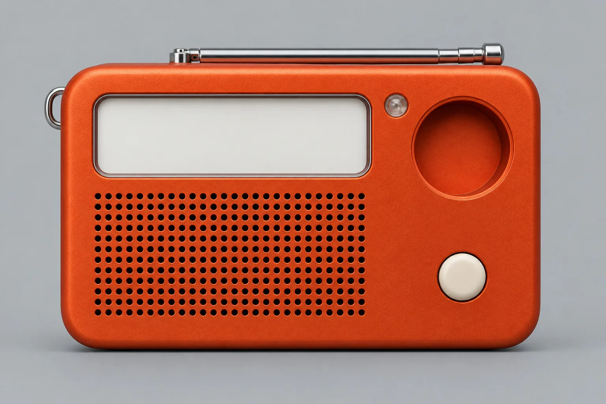
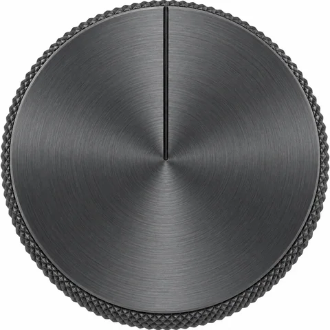

Fennick R1 · pocket FM radio
A small orange radio, ready in March.
-
A radio for your shirt pocket.
The R1 does one thing: FM, loud enough for a kitchen and small enough to forget it’s on you. One knob, one key, and an aerial that pulls out to 42 cm.
- FM 87.5–108
- One knob
- No app
-
£145, posted anywhere in the UK.
That includes the USB-C cable, a waxed-cotton sleeve and a two-year guarantee we honour from our own bench. EU and US postage is quoted at checkout.
- £145
- 2-year guarantee
- UK post included
-
One block of aluminium, anodised orange.
The shell is machined from solid 6061 and anodised in Sheffield. The knob is knurled graphite, the key is cream acetal, and the speaker sits behind 380 drilled holes.
- 190 g
- 11 × 6.5 × 2.4 cm
- 30 h a charge
-
300 radios, numbered on the back.
The two of us assemble and test every R1 in our workshop in Kinning Park, Glasgow. When Batch 01 is gone, Batch 02 follows in the summer.
- No. 001–300
- Made in Glasgow
- Batch 02: summer
-
Ships 4 March 2027.
Leave your email and we’ll write once, on launch morning, with first claim on Batch 01. Nothing to pay now.
You’re on the list for Batch 01. We’ll write on 4 March. Demo form: nothing was sent.

